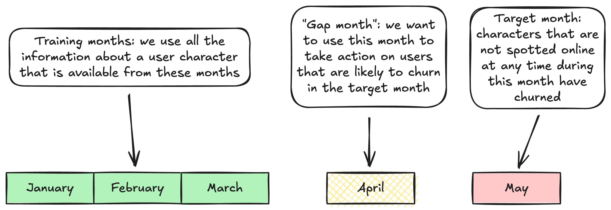
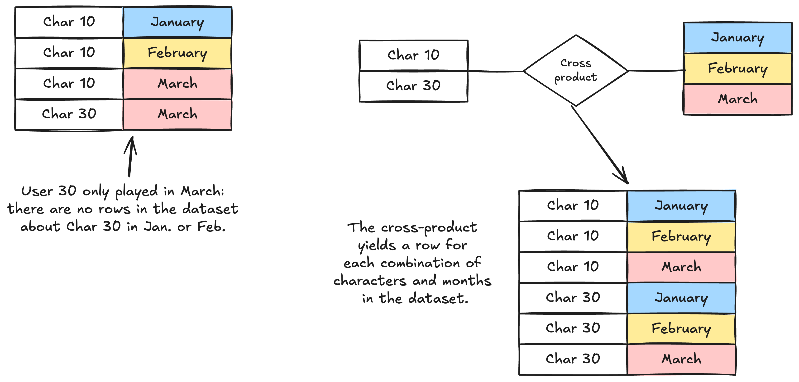
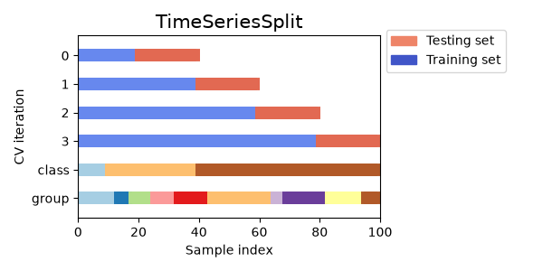

def make_data(df, interval="1mo"):
"""
Prepare a dataframe that contains the months in which each player has
actually played. The column "has_played" is then set to True for those months.
Any month in which the player did not play is missing from this dataset,
because the dataset is built starting from player activity, so any "empty
month" simply doesn't exist in this dataset.
"""
data = (
df.with_columns(
pl.col("timestamp").dt.truncate(interval).alias("month"),
first_month=pl.col("timestamp").dt.truncate(interval).min().over("char"),
)
.unique(subset=["char", "month"])
.with_columns(pl.lit(True).alias("has_played"))
)
return dataPart 2 · What churn means here, and a splitter that respects time
1 What churn means here
Modeling user churn is a common application of machine learning models, though the definition of churn is typically business-specific. In general, by “user churn” one refers to “a user that does not come back to the service for a certain length of time, if ever”.
In the context of this example, churn refers to those avatars that are not found online for at least two consecutive months: we consider those characters as users that stopped playing, and consequently suspended their subscription.
Important
In WoW, a single player may have multiple “player characters” or “avatars”. The information available in the dataset does not allow us to link a player to their avatars, and as such we will treat each avatar as an independent player.
This is reflected in how we model churn: as we do not have access to which player is behind each avatar, we assume that any churned avatar is a churned player.
As we do not have access to the actual subscription data, we assume that a player has suspended their subscription when they stop playing for two consecutive months. A single missing month is more likely a break than a cancellation, so a character that skips a month and then comes back is not considered churned.
For this post, we aggregate player behaviors at a monthly basis, and add a has_played flag that tells us if a player has played at least once during each month. From it, we derive two columns:
churn: the character has churned as of this month, i.e.,has_playedisFalseboth in this month and in the previous one.churn_next: the value ofchurnin the following month. This is the target that we want to predict.
Important
Our objective
Given a month (e.g., June), we want to use all the data up to the last day of the previous month (all months until May included) to predict whether a user will have churned as of July (i.e., their has_played flag will be False both in June and in July).
In other words, a row at month M means “act during month M, using data up to the end of M-1, to predict absence in M and M+1.”

Warning
Why we’re predicting one month in the future
Given the month of June, we may be tempted to use churn at this month as the target. However, June’s features are built from May, and churn for June is only true if the character is absent in May: any character that is active in May is labeled as “not churned” by construction, and the model would learn that just by looking at the missing values. This would produce overly optimistic results.
Shifting the target to July avoids this problem: in June we want to predict whether a player is active in July using data from and up to May.
One caveat with this modeling strategy is that we are working with historical data, so we cannot actually apply said incentive and observe whether it has an impact like in a typical A/B test.
1.1 Building the churn dataset
We begin by adding two columns to the historical dataset: in the first we store each timestamp, truncated to have a monthly resolution; in the second we track the first month for each character. Additionally, we add a constant has_played column that acts as our “player was seen” flag.
We are interested in monthly snapshots, so the dataset is then reduced to select only the unique (character, month) pairs.
Since we want to predict the behavior a player will have over a single month, our target variable will be grouped by “user-month” (e.g., ID153_2026-12). However, not all players will play at least once every month, so by relying exclusively on the historical data we would be missing samples; to get around this problem we generate a char_month dataset that contains all unique combinations of users and months by executing the cross-product between the unique users and the range of months.

The grid extends three months past the end of the data to make sure the learner does not crash with unseen data.
Now that we have all the combinations (character, month), we can join back the prepared data to mark all the months in which each character was found online, and marking all others with has_played=False.
Additionally, the resulting rows are filtered to remove all pairs (char, month) whose month precedes the character’s first month. We should not have a row about a character’s playtime in January if they started playing in August!
Then we add the churn information. After sorting by month, prev_played is the has_played flag of the previous month for the same character (False for the first month), churn marks the characters absent in both months, and churn_next is churn shifted one month back within each character. The last observed month has no “next month” to look at, so its churn_next is left empty, and so is that of the three padding months.
Finally, we can put everything together in a single function that takes the historical data as input and returns a dataset with the churn indication as output. Rows without a target are dropped, since they can be used neither for training nor for evaluation. Optionally, with only_prev_active=True, it also keeps only the rows of characters that played in the previous month. We come back to why below:
def build_churn_dataset(historical_data, only_prev_active=False):
"""
Build the (char, month) table with `has_played`, `prev_played`, `churn` and
the target `churn_next`.
Rows whose target is unknown (the last observed month and the padding months
after it) cannot be used to train or evaluate a model, so they are dropped.
With `only_prev_active=True`, only the rows where the character played in the
previous month are kept. Features for a row at month M are built from month
M - 1, so a character that was already absent in M - 1 has no features and
is not a prediction we could act on: the target then only contains
characters that were active in M - 1 and are absent in both M and M + 1.
Keep the default (all rows) when the full (char, month) grid is needed, for
example to build lagged features, which need each character's full timeline.
"""
# Load the dataset
data = make_data(historical_data)
# Add the combinations of user months
user_month = make_user_month(historical_data)
churn_data = add_churn(user_month, data).filter(
pl.col("churn_next").is_not_null()
)
if only_prev_active:
churn_data = churn_data.filter(pl.col("prev_played"))
return churn_data.collect()churn_data = build_churn_dataset(df, only_prev_active=True)
churn_data
shape: (81_199, 7)
| char | month | has_played | prev_played | churn | churn_next | first_month |
|---|---|---|---|---|---|---|
| i32 | datetime[μs] | bool | bool | bool | bool | datetime[μs] |
| 7 | 2008-02-01 00:00:00 | true | true | false | false | 2008-01-01 00:00:00 |
| 7 | 2008-03-01 00:00:00 | true | true | false | false | 2008-01-01 00:00:00 |
| 7 | 2008-04-01 00:00:00 | true | true | false | false | 2008-01-01 00:00:00 |
| 7 | 2008-05-01 00:00:00 | false | true | false | true | 2008-01-01 00:00:00 |
| 9 | 2008-02-01 00:00:00 | true | true | false | false | 2008-01-01 00:00:00 |
| … | … | … | … | … | … | … |
| 85070 | 2008-11-01 00:00:00 | false | true | false | true | 2008-10-01 00:00:00 |
| 85071 | 2008-11-01 00:00:00 | true | true | false | false | 2008-10-01 00:00:00 |
| 85072 | 2008-11-01 00:00:00 | false | true | false | true | 2008-10-01 00:00:00 |
| 85073 | 2008-11-01 00:00:00 | true | true | false | false | 2008-10-01 00:00:00 |
| 85074 | 2008-11-01 00:00:00 | true | true | false | false | 2008-10-01 00:00:00 |
This dataframe contains a row for each (character, month) in which the character was active in the previous month, up until the second-to-last month of the dataset. In each row, has_played informs us of whether the character logged in at any time in that month, and churn_next is the target that we want to predict on a monthly basis.
Note
Why only characters that were active in the previous month
Features for month M are built from month M-1, so a character that was already absent in M-1 has no features at all. Such a character is also very likely to be labeled as churned: in the 2008 data, 75% of the churn_next=True rows belong to characters that were already absent in the previous month, and the trivial rule “absent last month” alone reaches a ROC AUC of 0.63. These rows have no features of their own, they make up most of the training set, and they are not characters we could still retain. We therefore only keep the rows where the character played in M-1, which leaves 81,199 of the 221,237 rows, and churn_next=True for 36.5% of them instead of 54.5%. In other words, the target is now “a character that was active in M-1 and is absent in both M and M+1”.
2 A splitter that respects time
Before starting with feature engineering and actually training the model, it’s worth spending some time understanding the scenario we are in.
The main factor that complicates this scenario is the fact that we are dealing with sequential data points, which are therefore not independent of each other: the position of a player at a time T is strongly correlated with their position at time T+1.
2.1 Why the default splitter does not fit
For this reason, we need to use a splitter that returns sequential splits. A common example of this is scikit-learn’s TimeSeriesSplit. TimeSeriesSplit works by splitting the entire dataset in a given number of splits; during cross-validation, at step K the splitter returns the first k splits as the train split, and the k+1 split as the validation split.

A downside of TimeSeriesSplit is that the splitter assumes uniformly distributed samples, so that each singular split has the same size as the others. This is a problem for our scenario: our samples are (character, month) pairs, and the number of characters in each month is never constant (in 2008, between about 6,700 and 12,500 rows per month):

For this reason, we need to define a custom splitter that is aware of the constraints we are working with. Given that we are working month-by-month, each split should contain all the rows of a specific month (the characters that played in the previous month, as explained above), and should be able to do so regardless of the fact that the number of characters changes.
There is a second constraint: the target of a row is the churn status of the following month, so it is only known one month later. If the training set included the rows of the month right before the test month, their targets would be computed from the activity in the test month. The splitter therefore leaves a one-month gap between the last training month and the test month.
This is what we implement here:
The boundaries of the experiment are defined in main.py: split points go from 2006-02-01 to 2008-10-01, and each test month is the one following its split point. The last test month is the latest one whose target is fully observed.
class Splitter:
"""
Iterates over the months. For each split point, the test month is the
following month: it is the month during which we would score users and act
on the ones marked as "churn risks".
The target of a row (churn_next) is the churn status of the month after it,
so it is only known one month later. The training set therefore stops one
month before the split point: a row from the split point month would have a
target computed from the test month.
"""
def split(self, user_month, has_played=None, interval="1mo"):
# the target is not needed in this splitter since we are only splitting
# based on the month
del has_played
time_range = pl.date_range(MIN_DATE, MAX_DATE, interval, eager=True)
for split_point in time_range:
# I can either use dateutils.relative delta
# test_month = split_point + relativedelta(months=1)
# Or do this with polars which is more consistent with the rest of the code
test_month = pl.Series([split_point]).dt.offset_by(interval).first()
last_train_month = (
pl.Series([split_point]).dt.offset_by("-" + interval).first()
)
# Train indices are up to last_train_month, included
train_idx = (
user_month.with_row_index("idx")
.filter(pl.col("month") <= last_train_month)["idx"]
.to_list()
)
# Test indices are for the month after split_point
test_idx = (
user_month.with_row_index("idx")
.filter(pl.col("month") == test_month)["idx"]
.to_list()
)
if train_idx and test_idx:
print(f"Working on month {split_point}")
yield train_idx, test_idx
def get_n_splits(self, X, y):
return sum(1 for _ in self.split(X, y))Like all other scikit-learn splitters, our splitter is a generator that, given X and y (user_month and the target in our case), returns the indices of the samples that should be used in each split.
With the target defined and the splits under control, the next part builds the features that describe each character’s month: sessions first, then location.